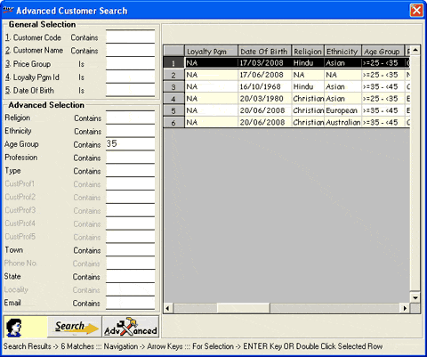

In Billing where customer acceptance is enabled, customer code can either be entered directly or browsed Advanced Customer Search using F2 when the cursor is in the Customer Code field.
Unless the customer is covered under loyalty programme or similar schemes, wherein the company allots a customer card, the customer will not know the code allotted. In such situation, the customer browse becomes very handy as the code allotted can be easily found by providing the known information related to the customer. You may observe that the captions of customer classification and profiles are displayed in the Advanced Selection frame where you can provide the known values to help further in finding out the customer code.
The Advanced Customer Search window is displayed.

General Selection: Enter a value in any of the fields pertaining to the customer to be searched.
Search: Click to view customer details. Alternately, press F4 to view the details of customers matching the selected criteria and select the relevant one from them.
Advanced: Click to view Advanced Selection with fields available for further refined search.
Enter the search criterion.
On pressing Alt+S, only those customers based on the different search criterion provided are displayed.
Press Enter or double click the selected customer.